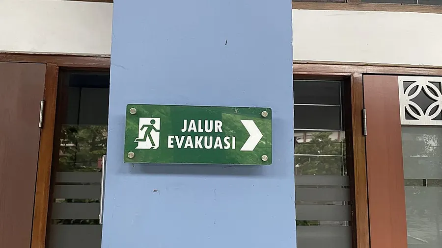

Mengenal dan Menghadapi Longsor
Tanah di lereng yang labil bisa bergerak turun. Yuk, kenali penyebab, tanda, dan langkah selamatnya, panel demi panel.
Ringkasan disarikan dari siaran resmi BNPB dan Badan Geologi (Kementerian ESDM). Sebagian sumber berupa berita kejadian, bukan buku panduan. Ringkasan ini tidak menggantikan arahan BPBD dan petugas setempat.
 Bekas longsor di atas permukiman, Nganjuk. Foto: BNPB (domain publik)KRAK!
Bekas longsor di atas permukiman, Nganjuk. Foto: BNPB (domain publik)KRAK!Apa itu longsor dan apa penyebabnya?
Longsor terjadi ketika tanah di lereng yang labil bergerak turun dan menimbulkan bencana, terutama bagi warga yang tinggal di tempat lebih rendah. Badan Geologi menyebut kejadian ini gerakan tanah longsor.
 Lereng terjal berteras. Foto: Alamberpuisi, CC BY-SA 4.0
Lereng terjal berteras. Foto: Alamberpuisi, CC BY-SA 4.0Pemicu 1: hujan intensitas tinggi
BNPB menyebut hujan yang berlangsung beberapa hari. Badan Geologi menjelaskan bahwa hujan lebat menambah tekanan air di dalam tanah dan menurunkan kekuatannya sehingga lereng gagal.
Pemicu 2: gempa bumi
Getarannya dapat melemahkan kekuatan lereng.
Pemicu 3: kegiatan manusia
Seperti pemotongan lereng dan peledakan di area tambang.
- kemiringan dan bentuk lereng
- kondisi geologi
- kondisi air atau hidrologi di lereng
- perubahan tata guna lahan
- kegagalan konstruksi
- saluran air permukaan yang belum baik

BNPB, "Tanah Longsor" (27 Des 2017); Kementerian ESDM/Badan Geologi, "Curah Hujan Tinggi, Masyarakat Diminta Waspadai Gerakan Tanah Longsor" (6 Feb 2018); Kementerian ESDM/Badan Geologi, "Longsor Terjang Desa Pasirlangu, Badan Geologi Ingatkan Ancaman Longsor Susulan" (25 Jan 2026).
Tanda-tanda bahaya
Warga yang tinggal di perbukitan atau dekat tebing diminta mengenali 5 tanda awal ini dan terus memantau keadaan sekitar.
 1KRAK
1KRAK
Mata air baru atau air keruh
Mata air baru muncul, atau air mata air atau sumur tiba-tiba keruh.
Pohon atau tiang miring
Pohon atau tiang yang tadinya tegak mulai condong.
 4TUK TUK TUK
4TUK TUK TUK
Suara gemuruh dari dalam tanah
Sumber: BNPB, "Tanah Longsor di Tapanuli Selatan Telan Dua Korban Meninggal" (23 Feb 2025); Badan Geologi, "Tanah Longsor Kembali Terjadi di Ponorogo, Masyarakat Diminta Waspada" (9 Apr 2017).
Persiapan sebelum longsor
Lebih dari 1 jam
- Waspadai hujan dengan curah tinggi dan simak informasi tentang hujan serta kemungkinan longsor; BNPB menyebut radio sebagai salah satu sarana.
- Siapkan makanan dan minuman siap saji, senter beserta baterai cadangan, uang tunai secukupnya, dan obat-obatan sesuai kebutuhan.
- Jangan menebang tanaman keras di lereng, jangan menggali lereng secara tegak lurus, dan atur aliran air permukaan di lereng.
- Bersiaplah mengevakuasi diri begitu pihak berwenang menginstruksikannya.
Sumber: BNPB 2017; Badan Geologi 2017; BNPB 2025 (judul seperti di atas).

Kenali jalur evakuasi. Foto: Candramawa99, CC BY 4.0Saat longsor terjadi
 Rambu jalur evakuasi, Bromo. Foto: Christophe95, CC BY-SA 4.0GRRRMMM!
Rambu jalur evakuasi, Bromo. Foto: Christophe95, CC BY-SA 4.0GRRRMMM!Di dalam rumah
Bila terdengar suara gemuruh, segera keluar menuju tempat lapang yang tidak terhalang.
Di luar rumah
Cari tempat lapang dan perhatikan sisi lereng atau tanah yang longsor.
Ikuti arahan BPBD dan petugas setempat.Sumber: BNPB, "Tanah Longsor" (27 Des 2017).

 Tangga evakuasi di bukit. Foto: Harris Est 13, CC0
Tangga evakuasi di bukit. Foto: Harris Est 13, CC0Setelah longsor
Jangan segera kembali ke rumah
Daerah bencana dan sekitarnya masih berpotensi longsor susulan, terutama saat dan setelah hujan deras, sehingga warga diminta mengungsi ke lokasi yang aman.
 Jalur longsoran, Simalungun. Foto: ButetSinaga, CC BY-SA 4.0
Jalur longsoran, Simalungun. Foto: ButetSinaga, CC BY-SA 4.0Pakai sepatu khusus dan peralatan keselamatan, pastikan pijakan cukup kokoh, jangan memperburuk keadaan di reruntuhan; atau tunggu petugas.
Jangan melakukan penanganan atau pencarian korban saat dan sesudah hujan deras karena risiko longsor susulan masih tinggi.
Sumber: BNPB 2017; Badan Geologi 2017; Badan Geologi 2026.
Hubungi bantuan
117
+62 21 29827444
Aparat desa dan BPBD kabupaten/kota. Kontak BPBD Provinsi Jawa Barat di bpbd.jabarprov.go.id.
SIAGA Longsor belum memberikan peringatan dini maupun perintah evakuasi. Prediksi harian masih percobaan. Tujuan dan rute evakuasi antardesa belum tersedia. Ikuti arahan BPBD atau petugas setempat.